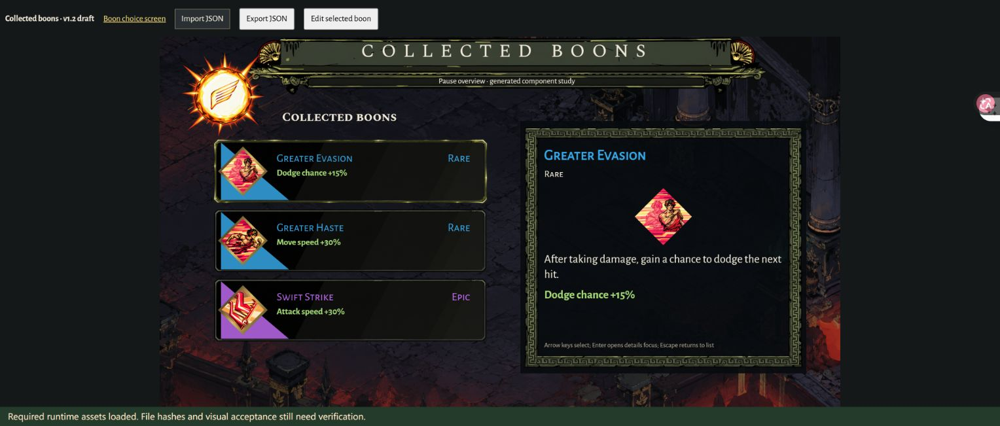
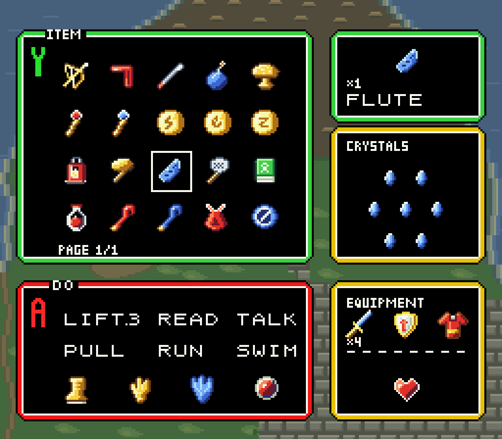
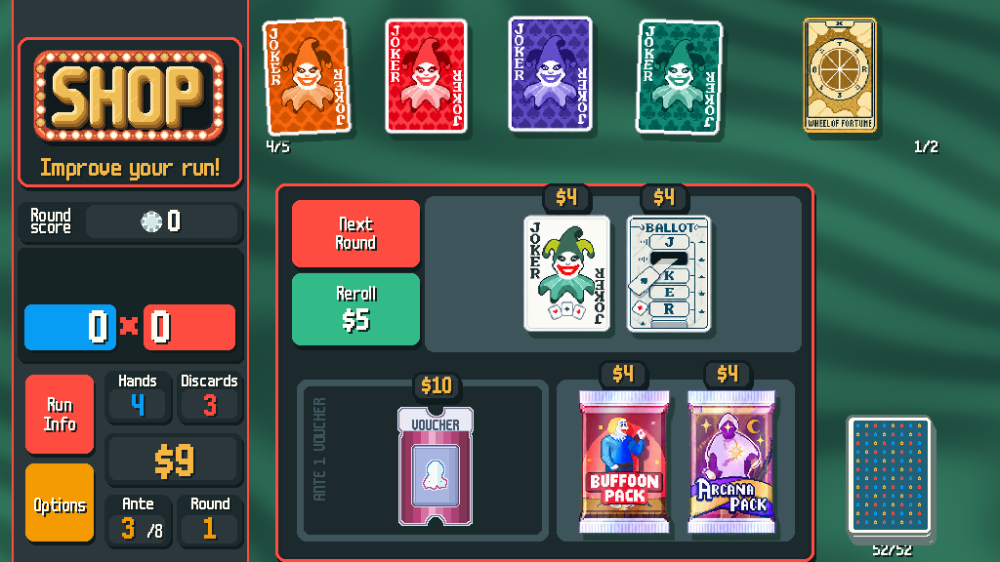
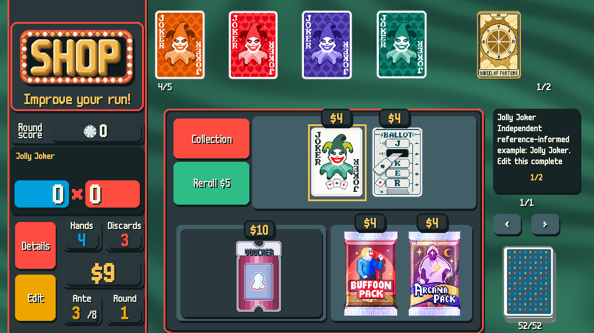

供远程查看的实验性参考预览。Hades与塞尔达通过的是具体版本的本地静态参考Skill与独立复用检查；Balatro仅代表屏风格方向通过，完整Skill仍未完成。商业权利未获确认，未开放购买。与原游戏及Skillry无隶属关系。
Hades · 2020 第一作祝福、收藏与升级

冻结v2.10。三屏包含仅凭冻结包制作的独立升级界面。未实现原作动画，字体为有许可的替代字库。
Zelda · 众神的三角力量 · 1991 SNES/SFC背包、装备与奖励

冻结v5。像素字阵、独立图标与数据驱动布局，奖励屏为独立使用测试。不是Switch版。背景正式重建入口是build_assets.py；包内旧可选脚本说明已撤回。
Balatro · 2024 · 未完成Skill商店代表屏 v3

代表屏静态风格方向与本机重建已复查。完整Skill、交互三屏及冻结包独立使用尚未通过，不作可交付成品。
Balatro v4 · 截止时收到，未完成验收商店与收藏 · 待验收候选

已收到完整候选文件、Skill与两个运行入口。尚缺两屏完整接收方验收、仅ZIP新上下文第三屏及三屏一致性证明，不能当作可交付成品。请自行查看实际页面。